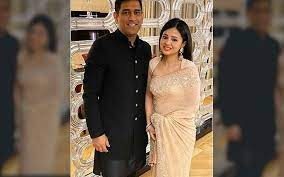

Dhoni married Sakshi Singh Rawat, his schoolmate in DAV Jawahar Vidya Mandir, Shyamali and a native of Dehradun, Uttarakhand, on 4 July 2010.At the time of their marriage, she was studying hotel management and was working as a trainee at the Taj Bengal, Kolkata. After the retirement of Sakshi's father from his tea growing business, their family shifted to their native place, Dehradun.
The wedding took place one day after the couple got engaged. According to Bollywood actress Bipasha Basu, a close friend of Dhoni, the wedding was planned for months and was not a spur of the moment decision.Dhoni became a father on 6 February 2015 to a baby girl named Ziva. At the time of her birth, Dhoni was in Australia as the captain of the Indian team with 2015 Cricket World Cup only a week away. He decided not to travel back to India and was famously quoted saying that "I am on national duty, other things can wait."